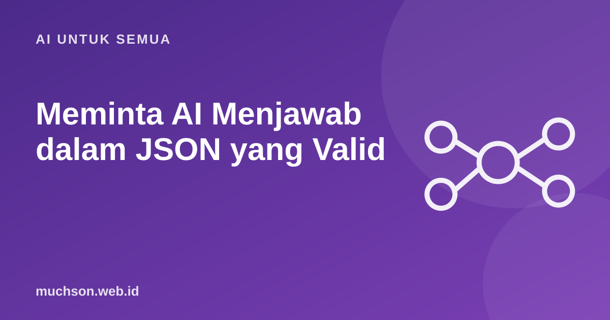

Beranda › Artikel › AI untuk Semua
AI untuk SemuaMeminta AI Menjawab dalam JSON yang Valid
Untuk ditampilkan ke manusia, paragraf sudah cukup. Untuk diproses aplikasi, Anda butuh data terstruktur: nama, tanggal, nominal, kategori. Meminta AI "jawab dalam JSON" kadang berhasil, kadang menghasilkan teks pembuka, koma berlebih, atau field yang hilang. Berikut cara membuatnya andal.

Contoh kebutuhan: membaca pesan pelanggan
Pesan WhatsApp:
"Kak, mau pesan frame titanium hitam 2 ya, kirim ke Jl. Merdeka 5 Madiun,
bayar transfer. Atas nama Sari."
Yang dibutuhkan aplikasi:
{
"nama": "Sari",
"item": [{ "produk": "frame titanium", "warna": "hitam", "jumlah": 2 }],
"alamat": "Jl. Merdeka 5, Madiun",
"pembayaran": "transfer"
}Empat tingkat keandalan
Tingkat 2: skema dan contoh di prompt
Ekstrak data pesanan dari pesan pelanggan.
Balas HANYA dengan JSON valid, tanpa teks lain, dengan bentuk:
{
"nama": string | null,
"item": [{"produk": string, "warna": string | null, "jumlah": integer}],
"alamat": string | null,
"pembayaran": "transfer" | "cod" | "qris" | null
}
Bila informasi tidak ada, isi null. Jangan menebak.
<pesan>
{isi_pesan}
</pesan>Instruksi "jangan menebak, isi null" sangat penting. Tanpanya, model cenderung mengarang alamat atau jumlah yang terdengar masuk akal.
Tingkat 3: paksa lewat skema
Banyak API kini menyediakan mode output terstruktur atau definisi alat dengan opsi strict yang memaksa jawaban sesuai JSON Schema. Caranya berbeda antar penyedia, jadi baca dokumentasinya. Polanya: Anda mengirim skema, API menjamin bentuknya.
alat_pesanan = {
"name": "simpan_pesanan",
"description": "Simpan data pesanan yang diekstrak dari pesan pelanggan.",
"input_schema": {
"type": "object",
"properties": {
"nama": {"type": ["string", "null"]},
"item": {"type": "array", "items": {
"type": "object",
"properties": {
"produk": {"type": "string"},
"warna": {"type": ["string", "null"]},
"jumlah": {"type": "integer", "minimum": 1}
},
"required": ["produk", "jumlah"]
}},
"pembayaran": {"enum": ["transfer", "cod", "qris", None]}
},
"required": ["nama", "item", "pembayaran"]
}
}
# kirim dengan tool_choice yang memaksa alat ini dipakai,
# lalu baca blok tool_use sebagai data terstrukturTingkat 4: selalu validasi di kode
for percobaan in range(3):
teks = panggil_model(prompt)
try:
return Pesanan.model_validate_json(teks)
except ValidationError as e:
prompt += f"\n\nJSON sebelumnya tidak valid: {e}. Perbaiki."
raise RuntimeError("Gagal mendapat JSON valid, minta admin memeriksa")Valid secara format belum tentu benar
Skema menjamin bentuk, bukan isi. Model bisa mengisi jumlah: 2 padahal pelanggan menulis "dua pasang". Untuk keputusan penting (harga, pembayaran, data medis), tampilkan hasil ekstraksi untuk dikonfirmasi manusia sebelum diproses.